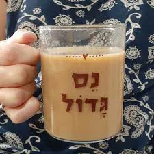
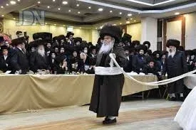
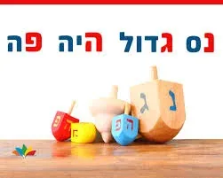
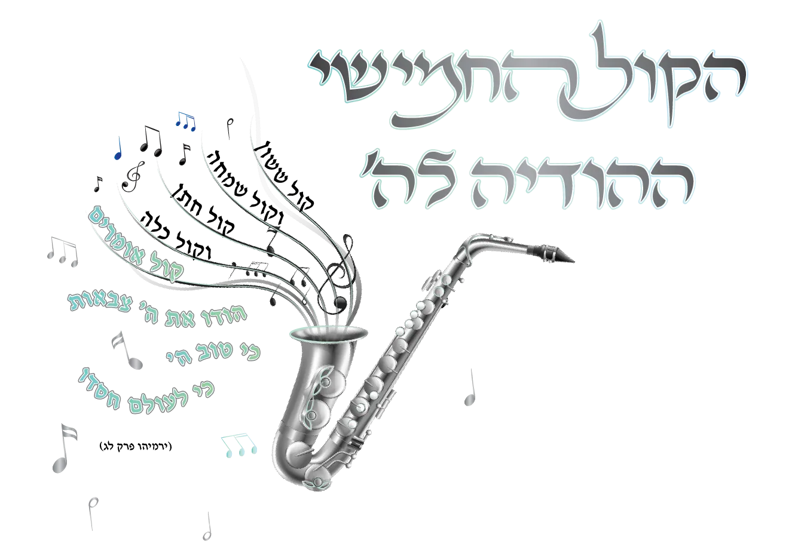

שאלות
אדם שקרה לו נס או חסד ה' , באלו שני דברים הוא חייב? ומנין?
היכן שני חלקים אלו נמצאים בקרבן תודה?
היכן שני חלקים אלו נמצאים בקול החמישי?
היכן בברכה יש שני חלקים אלו?
מדוע אמרו חז''ל: "המשמח חתן וכלה - כאילו הקריב קרבן תודה"?
מאיזה פרשה בתורה אנו יכולים ללמוד כיצד צריכה להראות חתונה?
היכן מוצאים אנו בפרשה הנ''ל את שני החיובים הנ''ל?
על איזה נקודה בפרשת אליעזר אמרו חז''ל "יפה שיחתן של עבדי אבות יותר מתורתן של בנים"?
הסבר לפי זה מדוע מצוות נר חנוכה היא חביבה עד למאוד?
נפסק בשו''ע אין מברכים ברכת חתנים (שבע ברכות) אלא בעשרה. מדוע צריך עשרה? במה זה שונה מכל ברכות השבח שלא צריך עשרה? (הבא כמה ביאורים)
מה נפ''מ בין הבאורים?
איזה דין נוסף יש בשביל לומר שבע ברכות?
הסבר מה טעם דינים אלו לפני שני חלקי ההודיה?
כיצד לפי זה מובן מדוע שבת נחשבת גם פנים חדשות?
נסה לתאר מה יהיה כאשר הקול החמישי יתקיים במלואו?

נסה לתרץ לבד את השאלות, עיין בחוברת הקול החמישי - תעלות הקול החמישי - ניתן לראות כאן
ניתן לרכוש את החוברת כולל משלוח חינם עד הבית- לפרטים לחץ כאן.
תשובות
- א. להודות. ב. לספר לאחרים, כמבואר בתהלים (קז, ח) יוֹדוּ לַייָ חַסְדּוֹ, וְנִפְלְאוֹתָיו לִבְנֵי אָדָם.
- בקרבן תודה יש שני דברים: א. הודאה להקב''ה על הטוב שגמלו, על זה בא הקרבן. ב. פרסום טובו וחסדו של ה', שזה בא בסעודה עם ריבוי הלחמים. כמו שנאמר (תהילים קו) "ויזבחו זבחי תודה (קרבן) ויספרו מעשיו ברינה (בסעודה)".
"קוֹל אֹמְרִים הוֹדוּ אֶת יְיָ צְבָאוֹת (הודאה על הטוב)...ֹ מְבִאִים תּוֹדָה בֵּית יְיָ" (קרבן תודה בשביל לספר טובו לאחרים).
זה גם משמעות הברכה: "קול מצהלות חתנים בחופתם" - כנגד "קוֹל אֹמְרִים הוֹדוּ" שמחת החתן הצוהל בהודיה לה'. "נערים ממשתה נגינתם" – כנגד "מְבִאִים תּוֹדָה בֵּית יְיָ", סיפור הניסים בסעודה הגורם לכולם לנגן ולהלל לה'.
שמחת החתן עיקרה הודאה והלל להקב"ה על החסדים שנשפעו עליו. לכן נחשב כמקריב קרבן תודה, כי ענין תודה הוא הכרת חסדי ה' יתברך וטובו להללו.
פרשת השידוכים בתורה, היא פרשת אליעזר המחפש שידוך לרבקה.
אליעזר מתחנן לה' ומבקש את עזרתו "הקרה נא לפני היום...", באותו רגע יוצאת רבקה והנס מתרחש לנגד עיניו. מה עושה מיד אליעזר? "ויקוד... וישתחו לה' ויאמר ברוך ה' אלוקי אדוני אברהם...". אומר המדרש רבה: "מכאן שמודים על בשורה טובה".
אז ממהר אליעזר לעשות את החיוב השני. הוא מגיע למשפחת רבקה, מסרב לאכול את האוכל המוגש לו באומרו: "לא אוכל עד אם דברתי דברי". הוא חייב לספר להם את נפלאות ה'. איך עמד ליד המעין, חיכה, התפלל, רבקה יצאה ואמרה: "שתה וגם גמליך אשקה" וכ"ו. הסיפור היה כל כך עוצמתי עד שאפילו לבן ובתואל לא התנגדו ואמרו: "מה' יצא הדבר...". ושוב, תגובתו הראשונה של אליעזר: "וישתחו ארצה לה'".יפה שיחתן של אלו המודים ומספרים בנפלאות ה', יותר מתורתם של בנים. ההודיה וסיפור הנס ברבים חביבים על הקב''ה עד מאוד.
רמב"ם הלכות מגילה וחנוכה פרק ד: מצות נר חנוכה מצוה חביבה היא עד מאד וצריך אדם להזהר בה כדי להודיע הנס ולהוסיף בשבח האל והודיה לו על הנסים שעשה לנו. בנר חנוכה יש את שני החלקים הנ''ל (הודיה ופרסום) ודבר זה חביב עד למאוד.

מצאנו במפרשים כמה באורים מדוע ברכת חתנים צריכה עשרה: א. בשיטה הביא בשם הגאונים (וכן נקט הגרי''ז): שנחשב דבר שבקדושה, ולכן צריך עשרה. ב. מלשון השע''צ (ריט,ד) שמשווה ברכת הגומל לברכת חתנים, משמע שצריך עשרה מדין פרסום שבחו של ה'. (וכן בבה''ל תרע''א ז)
כתב בספר ברכת חתנים: נפ''מ בין הפירושים אם התחילו עשרה ויצאו מקצתם. שאם מדין דבר שבקדושה הרי קימ''ל לגבי דבר שבקדושה שאם התחילו בעשרה ויצאו מקצתם גומרים. לעומת זאת אם הטעם משום פרסום שבחו של ה' - הרי צריך שיהיה כל הזמן עשרה אנשים.
עוד נפ''מ לגבי מה שנפסק בשולחן ערוך (סימן נה סעיף ח): חרש המדבר ואינו שומע, או שומע ואינו מדבר, הן כפקחין ומצטרפים. שאם כטעם השיטה גם בברכת חתנים יצטרף לעומת זאת למ''ב שצריך לפרסם שבחו של ה' לא יצטרף.אין אומרים שבע ברכות אלא: א. שיש פנים חדשות. ב. בעשרה אנשים.
בשביל להודות תקנו חז''ל פנים חדשות, שכן כאשר מגיע אדם שמשתתף בשמחה בפעם הראשונה מתחזקת ומתעוררת השמחה מחדש אצל כל הנמצאים, לראות את חסד ה' בעיניים חדשות, ולהודות ביותר שמחה והתלהבות.
בשביל לספר חסדי ה' תקנו שיהיה צריך עשרה כדכתיב (תהלים קז,לב) וִירֹמְמוּהוּ בִּקְהַל עָם, לכן גם ברכת הגומל צריכה עשרה.שבת היא יום שהנשמה מתעוררת להודות לה' לכן נחשבת היא כפנים חדשות. כמובא במדרש (מובא בריטב"א כתובות ז/ב) מזמור שיר ליום השבת כיון שבאה שבת אומר הקב"ה פנים חדשות באו לכאן אמרו לפני שירה.
בעז''ה בקרוב נזכה שה"קול החמישי" קול ההודיה - יחזור לחתונות שלנו, אז נראה ששון ושמחה אמיתים הגורמים לכולם לשיר ולזמר בשמחה עצומה לה'.
לשמיעות שיעור בנושא מפרשת אליעזר ורבקה לומדים את צורת ההודיה בחתונה לחץ כאן

הקול החמישי - בשמחת חתן וכלהלהארות והערות שאלות ותגובות - לחץ כאן